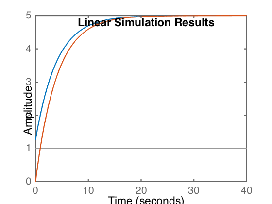

The transfer function a system given by
\begin{equation*}
4\dot{x}+x=g(t)+\dot{g}(t)
\end{equation*}
is
\begin{equation*}
T(s)=\frac{s+1}{4s+1}
\end{equation*}
while for a second system given by
\begin{equation*}
4\dot{x}+x=g(t)
\end{equation*}
is
\begin{equation*}
T(s)=\frac{1}{4s+1}
\end{equation*}
Find the response to an input of \(5u(t)\).
Given that the amplitude of the step input is 5, it's easiest to simply multiply the transfer function by five and use a unit step function, allowing us to use the Matlab step function.
sys1=tf([1 1]*5,[4 1]) sys2 = tf([1]*5,[4 1]) step(sys1); hold on; step(sys2)

sys1 =
5 s + 5
-------
4 s + 1
Continuous-time transfer function.
sys2 =
5
-------
4 s + 1
Continuous-time transfer function.
Alternatively, using lsim.
sys1=tf([1 1]*5,[4 1]) sys2 = tf([1]*5,[4 1]) t=0:.01:40; u=t*0+1; lsim(sys1,u, t); hold on; lsim(sys2,u,t)
sys1 =
5 s + 5
-------
4 s + 1
Continuous-time transfer function.
sys2 =
5
-------
4 s + 1
Continuous-time transfer function.
In both cases, the blue line represents the sys1 response, and the orange line the sys2 response. This can be demonstrated by plotting them individually.
The effect of the \(\dot{g}(t)\) term is to effectively jump start the response at a higher level, equivalent to 5/4, which are two numbers you should see in the sys1 transfer function.
Comments
comments powered by Disqus